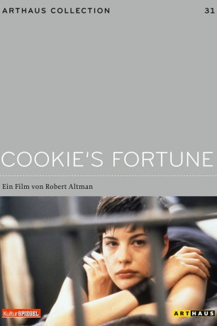

#4222 Cookie's Fortune - Aufruhr in Holly Springs
Alternativ: Cookie's Fortune
 
 IMDB-Wertung: 6.9 / 10
IMDB-Wertung: 6.9 / 10  Metascore: 0
Metascore: 0 
Die reiche Witwe Cookie, die den Tod ihres Mannes nie verschmerzt hat, setzt eines Tages ihrem Leben ein Ende. Dieser Freitod mißfällt allerdings deren Nichte Camille. Allein wegen des Ansehens der Familie wäre ein Tod durch Verbrechen doch viel angebrachter. Also verschluckt Camille Cookies Abschiedsbrief und arrangiert alles so, daß der Mordverdacht auf Willis, den schwarzen Hausmeister der Tante, fällt. Damit löst sie jedoch eine Kette von Ereignissen aus, die nach und nach sämtliche Einwohner von Holly Springs in Aufruhr versetzt.
Jahr: 1999
Dauer: 118 Minuten
FSK: 6
Land: USA Studio: October FilmsTonspuren: DTS - ,
Untertitel: Deutsch,
Auflösung: 1080p (1920x1080) Größe: 9707 MB
Genre: Komödie, Drama
Regisseur:  Robert Altman
Robert Altman
Drehbuch: Justin Marks
Soundtrack:
Darsteller:
 Glenn Close als Camille Dixon
Glenn Close als Camille Dixon Julianne Moore als Cora Duvall
Julianne Moore als Cora Duvall Liv Tyler als Emma Duvall
Liv Tyler als Emma Duvall Chris O'Donnell als Jason Brown
Chris O'Donnell als Jason Brown- Charles S. Dutton als Willis Richland
 Patricia Neal als Jewel Mae 'Cookie' Orcutt
Patricia Neal als Jewel Mae 'Cookie' Orcutt Ned Beatty als Lester Boyle
Ned Beatty als Lester Boyle Courtney B. Vance als Otis Tucker
Courtney B. Vance als Otis Tucker Donald Moffat als Jack Palmer
Donald Moffat als Jack Palmer Lyle Lovett als Manny Hood
Lyle Lovett als Manny Hood Matt Malloy als Eddie 'The Expert' Pitts
Matt Malloy als Eddie 'The Expert' Pitts Randle Mell als Patrick Freeman
Randle Mell als Patrick Freeman Niecy Nash als Wanda Carter
Niecy Nash als Wanda Carter- Rufus Thomas als Theo Johnson
- John M. Sullivan II als Mr. Tippit
 Red West als Mr. Henderson
Red West als Mr. Henderson- Christopher Coulson als Deputy
- Cheryl Cole als Picnic Lady
- Danny Darst als Billy Cox
- Ruby Wilson als Josie Martin
- Preston Strobel als Ronnie Freeman
- Anne Whitfield als Mrs. Henderson / Herodias
- Hank Worsham als Tigellinus
- Kenny Pillow als Soldier #1
- Derek Guyer als Soldier #2
- Emily Sindelar als Marlene
- Heath Lail als Prop Boy
- Shari Schneider als Mrs. Tippit
- Ferguson Reid als Deputy
- Fred Sanders als Guitarist
- Jimmy Ellis als Drummer
- Solomon McDaniel als Keyboardist
Datei: X:\1999\Cookie's Fortune - Aufruhr in Holly Springs (1999, FSK6, 1920x1080).mkv seit 26.08.2016
Festplatte: HD 1996-2002
 Es gibt insgesamt 81 Filme in der Gruppe '1999'
Es gibt insgesamt 81 Filme in der Gruppe '1999'